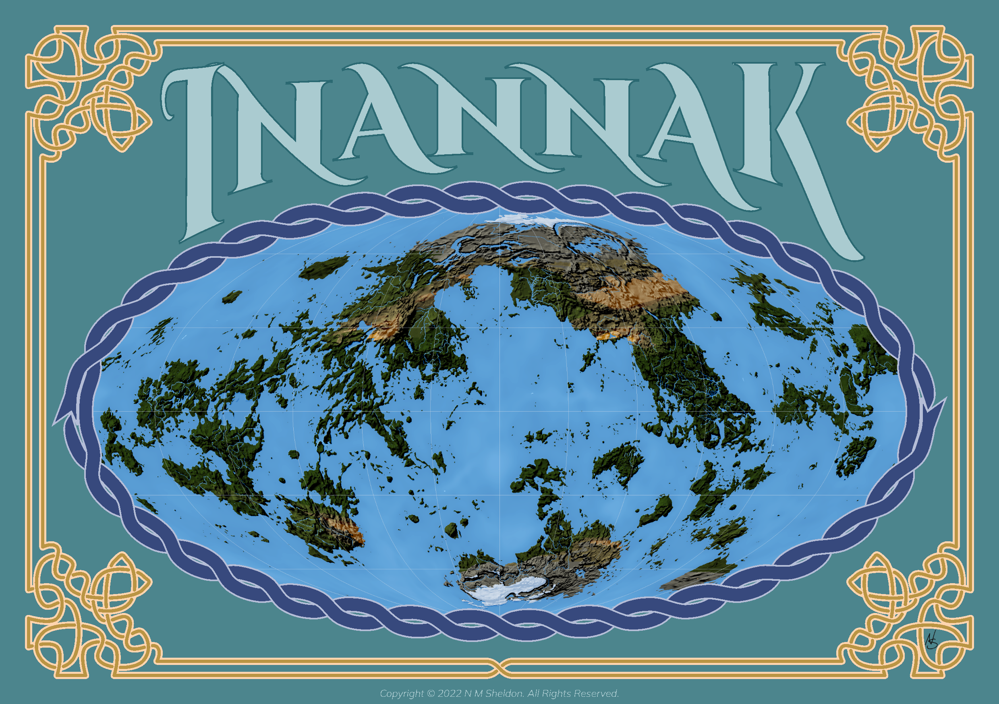

The World of Inannak

Introduction
After ten thousand years under the iron tentacles of the gods, the peoples of Inannak have finally banished their masters and freed themselves. But the the consequences of the old gods' final curse remain. Day by day the heat rises, the oceans pull away from the land, and the skies darken. Are these omens of worse to come? Will the peoples of Inannak face their demise, or can some brave heroes remove the curse or lead the people to a new world?
Inannak is a fantasy world created for use in role-playing games and fiction. This website will one day describe that world, its geography, its history, and its peoples. You are welcome to use it as a setting for your own home games.
Living Document
This website is a living document. The book is incomplete and new articles will be added as the work continues. There is a forum for anyone interested in talking about the world or the website. If you have suggestions, noticed any mistakes, or just want to contribute, use that forum to connect with the community. Please limit the use of the issues page to direct contributors.
Even after the entire book is complete, changes may continue. The creator is only human, and mistakes will need to be corrected, from simple spelling errors, to lore inconsistencies, to unintentional injustices. If you do wish to review older versions, you may check them out on the github site. No instructions will be given for doing this. Content found in this history but not in the most current version is not considered official lore.